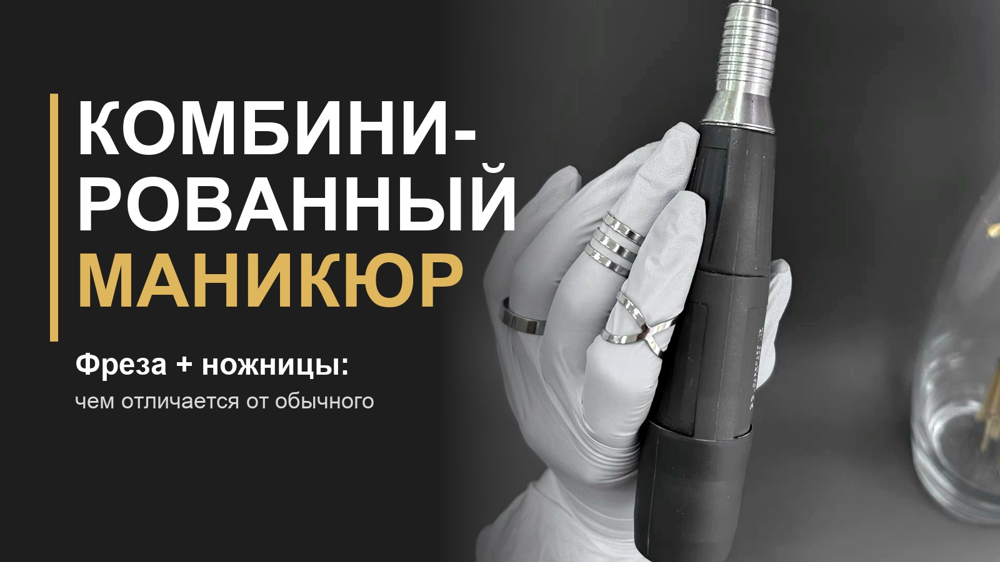

Комбинированный маникюр: что это и чем отличается от других

Комбинированный маникюр — это когда кожу и кутикулу обрабатывают двумя способами: фрезой и ножницами. Расскажу простыми словами, как это устроено и кому подходит.
Что такое комбинированный маникюр
Это способ обработки, в котором работают сразу два вида инструментов: аппарат с фрезой и ручные (маникюрные ножницы, пилка). Фреза быстро делает основную часть работы, ножницы дают точность там, где аппарат сработал бы грубее.
Поэтому его не считают отдельным «третьим видом». Это сочетание аппаратного и классического (обрезного) маникюра.
Из чего складывается работа
- Подготовка. Руки и инструменты обрабатывают антисептиком, оценивают состояние кожи и ногтя.
- Снятие старого покрытия (если оно есть) фрезой.
- Кутикула и боковые валики. Фреза убирает сухую кожу и размягчённую кутикулу.
- Ножницы. Ими аккуратно срезают заусенцы и лишние кусочки кожи, которые фреза берёт неточно.
- Форма. Пилкой придают ногтю нужную форму.
- Покрытие (по желанию): гель-лак под кутикулу, сушка в лампе, уход маслом.
Хотите разобраться в этом по порядку?
Онлайн-курс маникюра с нуля: теория и практика в записи, доступ навсегда, именной сертификат. Подходит из любого города России.
Посмотреть программу курсаЧем он отличается от классического и аппаратного
- Классический (обрезной). Всё делают ручными инструментами: ножницами, кусачками, пушером. Нужна аккуратная и уверенная рука.
- Аппаратный. Всё делают фрезой. Быстро, но фрезу нельзя задерживать на одном месте, иначе легко повредить ноготь или кожу.
- Комбинированный. Основную работу делает фреза, а точные места доводят ножницами. Это золотая середина, поэтому его выбирают и мастера, и те, кто делает маникюр себе.
Европейский маникюр — другое: там кутикулу размягчают специальным средством и мягко сдвигают, без обрезания.
Кому он подойдёт
- Тем, кто хочет делать маникюр себе: набор небольшой, достаточно аппарата с фрезой и ножниц.
- Начинающим мастерам: два основных инструмента проще освоить, чем целый набор.
- Тем, у кого чувствительная кожа вокруг ногтя: там, где фреза слишком агрессивна, работают ножницами.
С чего начать учиться
Самая частая ошибка новичков: сразу брать аппарат в руки, не понимая, где у ногтя живая ткань. Сначала разберите строение ногтя и кожи, правила дезинфекции инструмента, потом переходите к практике: фреза, ножницы, покрытие. Именно в таком порядке построен онлайн-курс маникюра с сертификатом: в нём есть маникюр, где из инструментов только ножницы и одна фреза.
Научиться комбинированному маникюру с нуля
Теория и практика в записи, смотреть можно в своём темпе. В конце — именной сертификат.
Перейти к онлайн-курсуЧастые вопросы
Больно ли делать комбинированный маникюр?
При правильной работе нет. Больно бывает, если фрезу держат на одном месте или задевают живую кожу.
Можно ли делать комбинированный маникюр дома?
Да, если есть аппарат с фрезой, ножницы и понимание, что именно нельзя трогать. Начните с теории, а не с практики наугад.
Чем комбинированный маникюр отличается от европейского?
Европейский — это мягкая обработка кутикулы без обрезания, обычно специальным средством и палочкой. Комбинированный работает инструментами: фрезой и ножницами.